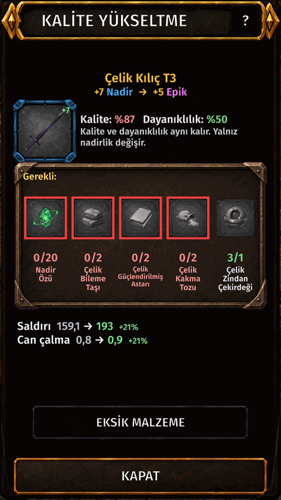

Quality upgrade
What it is
Raise an item's rarity one step: Normal, Rare, Epic, Legendary. In the game this is called Upgrade Quality.
How to get there
- INVENTORY.
- Tap the item.
- ••• menu: Upgrade Quality.

Screen shown in Turkish.
What it does
- A higher rarity gives stronger stats, one more bonus stat line and one more rune slot.
- Quality, durability, bonus stats and runes are kept. Only the rarity changes.
- The item loses a few '+' levels. The screen tells you how many before you confirm.
What you need
- Essence of the item's CURRENT rarity.
- Whetstone (Weaponsmith), Reinforced Lining (Armorsmith) and Inlay Powder (Jewelcrafting) of the item's tier.
- For Epic and Legendary also a Dungeon Core of the item's tier. Cores drop in dungeons.
- Tap a material on the screen: View info or Go to market.
Watch out
- It never fails, but it cannot be undone: the game asks you twice.
- Works on equipped and bound items. Not while the item is listed on the market.
- Legendary is the last step.
- Do not mix it up with the Quality value in the item info: that is set when the item drops and only a reroll changes it.